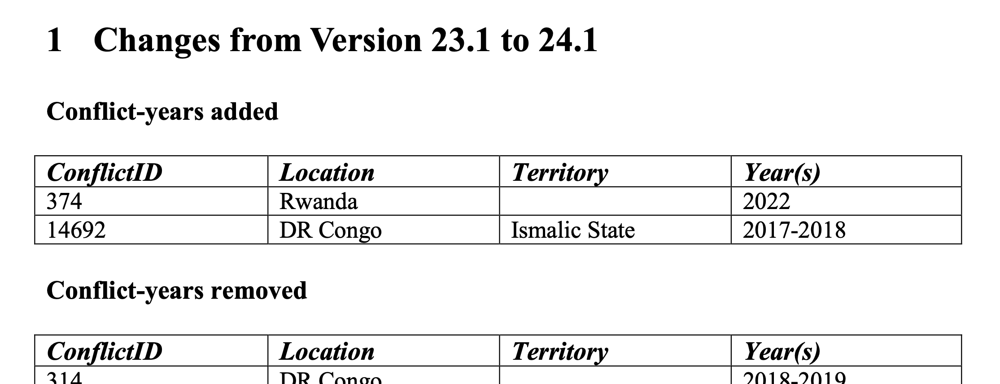
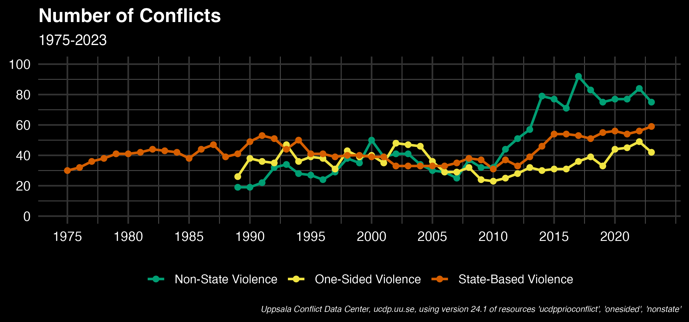
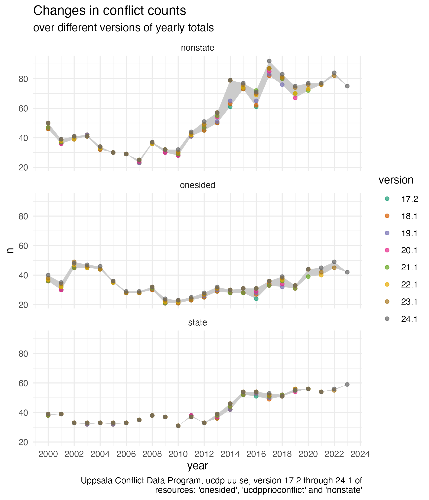
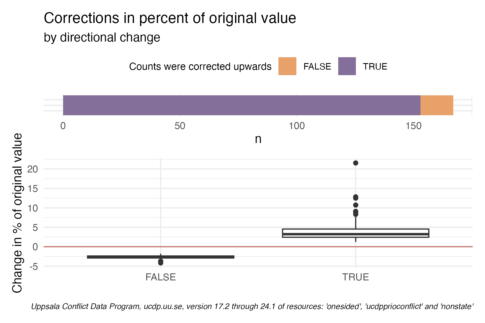

![]()
require(devtools)
devtools::install_github("datapumpernickel/conflictoR")The replication problem
When doing data analysis one of the problems we face is to make sure that our analysis is replicable. In a quantitative study, in which many of the outcomes are produced by code from pre-existing data, in theory, this should be easily achieved. However, the ongoing replication crisis in different scientific fields has shown to be rather durable. In the following I will address this topic with an example of Uppsala Conflict Data Center datasets. In Part I, only a broad overview of changes in their datasets will be provided, in Part II I want to explore those changes a bit more across regions.
Retrospective changes
While working with data, I have more often than not come across the issue that I download some dataset and work on the analysis. A few month go by where I work on other things and when getting back to the project I download the data again, except now the results have changed! This is very common in datasets in political science, where good data is hard to come by and new information might change how we code past events.
One case that I came across recently is conflict data, so information on how many conflicts take place in a given time frame and area and also how many fatalities are associated with these.
The Uppsala Conflict Data Program (UCDP), as they write themselves, is the world’s main provider of data on organized violence and the oldest ongoing data collection project for civil war, with a history of almost 40 years. Its definition of armed conflict has become the global standard of how conflicts are systematically defined and studied.
UCDP offers us a nice insight into this problem, because they properly version their datasets, allowing us to retroactively access outdated datasets and even provide detailed codebooks for each different version and what has changed. See for example here.

Sidenote: Code that is understandable, reproducable and hence helps to replicate
When writing code that makes data available that I use frequently, I try to make my code reproducible. This is firstly to save myself work in the future, but it will also make it easier for others to use my code to replicate my results. One great way of doing this is to package code into an actual R-package. If you are interested in doing this, the single-most helpful and wonderful resource is this book here by Hadley Wickham and Jennifer Bryan.
The conflictoR package
Specifically with the resource above, I have found that the two packages which promised to allow access to the API in R where not fully functional for my use-case (either because they did not allow filtering and contributions in a private gitlab were complicated or because the package actually was not fully developed and seemed stale). Hence I quickly wrote my own code, which I then packaged, so I can use it again in the future and others can use it to access the same data.
You can find the conflictoR package on github and install it as follows:
Visualizing the UCDP conflict counts
Getting and cleaning the data
Now for starters, let’s replicate the graph that appears on the dashboard of UCDP for the number of conflicts in the world. For that we need three datasets, c("ucdpprioconflict", "nonstate", "onesided").
Show the query
## loading libraries
library(tidyverse)
library(conflictoR)
library(purrr)
## making a dataframe with all combinations of datasets and versions
datasets = c("ucdpprioconflict", "nonstate", "onesided")
version <- "24.1"
## querying this data using the conflictoR package
state <- cl_get_data(resource = datasets[1],
version = version) |>
## selecting the columns we need
transmute(
dataset = datasets[1],
year = as.character(year),
conflict_id,
version = "24.1"
)
nonstate <- cl_get_data(resource = datasets[2], version = version) |>
transmute(
dataset = datasets[2],
year = as.character(year),
conflict_id,
version = "24.1"
)
onesided <- cl_get_data(resource = datasets[3], version = version) |>
transmute(
dataset = datasets[3],
year = as.character(year),
conflict_id,
version = "24.1"
)
## clean the data to count actual conflicts and merge the sets
clean_full_data <- bind_rows(state,
nonstate,
onesided)|>
count(year, version, dataset) |>
group_by(year, dataset) |>
mutate(year = as.numeric(year))With the three datasets queried and cleaned, as well as having counted the unique conflict_ids per year, dataset and version, we can now move on to visualize the numbers.

colors <- c(
"ucdpprioconflict" = "#D55E00", # red for State-Based Violence
"nonstate" = "#009E73", # green for Non-State Violence
"onesided" = "#F0E442" # yellow for One-Sided Violence
)
labels <- c(
"ucdpprioconflict" = "State-Based Violence",
"nonstate" = "Non-State Violence",
"onesided" = "One-Sided Violence"
)
clean_full_data <- read_rds("data1.rds")
# Generate the plot
ggplot(data = clean_full_data |>
filter(year >= 1975 & year <= 2023, version == "24.1")) +
geom_line(aes(x = year, y = n, color = dataset, group = dataset), size = 1) +
geom_point(aes(x = year, y = n, color = dataset), size = 2) +
scale_color_manual(values = colors,
labels = labels) +
labs(title = "Number of Conflicts", subtitle = "1975-2023", caption = "using version 24.1 of all datasets") +
scale_x_continuous(breaks = seq(1975, 2023, 5)) +
scale_y_continuous(breaks = seq(0, 100, 20), limits = c(0,100)) +
theme_minimal(base_size = 14) +
theme(
plot.background = element_rect(fill = "black", color = NA),
panel.background = element_rect(fill = "black", color = NA),
panel.grid.major = element_line(color = "grey20"),
panel.grid.minor = element_line(color = "grey30"),
axis.text = element_text(color = "white"),
plot.caption = element_text(color = "white"),
axis.title = element_blank(),
plot.title = element_text(color = "white", size = 16, face = "bold"),
plot.subtitle = element_text(color = "white", size = 12),
legend.position = "bottom",
legend.title = element_blank(),
legend.text = element_text(color = "white", size = 10),
legend.background = element_rect(fill = "black", color = NA)
)Tracking changes across different versions
Now in order to look at how these numbers change across different versions, lets get the datasets for all versions. The below code uses tidyr to expand our unique combinations of datasets and versions to one dataset. We then use the handy map2() function from the map() family of purrr to iterate over the two columns of the data. We could have also achieved this with pmap(), but map2() makes it a bit more explicit how the variables were passed on.
## making a dataframe with all combinations of datasets and versions
all_combinations <- tidyr::expand_grid(
datasets = c("ucdpprioconflict", "nonstate", "onesided"),
versions = c("24.1", "23.1", "22.1", "21.1", "20.1", "17.2", "18.1", "19.1")
)
## querying this data using the conflictoR package
full_data <- map2(
all_combinations$datasets,
all_combinations$versions,
~ cl_get_data(.x, .y) |>
transmute(
dataset = .x,
year = as.character(year),
conflict_id,
version = .y
)
)Now that we queried all the dataset-version combinations, we can bind the datasets together and actually count the conflicts in each year for each version and dataset. For each dataset-year combination, we also get the maximum and minimum count, to be able to plot this range as well.

## making a dataframe with all combinations of datasets and versions
all_combinations <- tidyr::expand_grid(
datasets = c("ucdpprioconflict", "nonstate", "onesided"),
versions = c("24.1", "23.1", "22.1", "21.1", "20.1", "17.2", "18.1", "19.1")
)
## querying this data using the conflictoR package
full_data <- map2(
all_combinations$datasets,
all_combinations$versions,
~ cl_get_data(.x, .y) |>
mutate(
dataset = .x,
year = as.character(year),
conflict_id,
version = .y
)
)
## clean the data to count actual conflicts
clean_full_data <- full_data |>
map( ~ .x |> distinct(conflict_id, year, version, dataset)) |>
reduce(bind_rows) |>
count(year, version, dataset) |>
group_by(year, dataset) |>
mutate(n_max = max(n),
n_min = min(n)) |>
mutate(year = as.numeric(year))
ggplot(data = clean_full_data |>
filter(year %in% 2000:2024)) +
geom_ribbon(aes(x = year, ymax = n_max, ymin = n_min),
fill = "grey80")+
geom_point(aes(x = year, y = n,group =version, color = version),
alpha = 0.7)+
labs(title = "Changes in conflict counts", subtitle ="over different versions of yearly totals")+
facet_wrap(.~dataset, ncol = 1)+
theme_minimal()+
scale_x_continuous(breaks = seq(2000, 2024, 2))+
scale_color_brewer(palette = "Dark2")It becomes quite evident that not too seldomly the number of conflicts is changed from one version to another, even if the actual conflict is quite some years back! This should probably not come as a surprise, since areas of violent conflict are usually hard to gain access to and collecting information in this environment is dangerous and news articles about these incidents are probably often not accurate, until some time has passed to allow for thorough investigation. It speaks to the dedication of researchers at UCDP that they incorporate changes so far back into their datasets.
The fact that we can see the largest amount of changes in the last 10 years, might be due to the fact, that the API only allows us to query the last 7 versions dating back to 2017.
Overestimation or Underestimation?
Intuitively, one would assume that lack of information leads to a systematic underestimation of conflict data. Hence, one question I wanted to answer was: Are conflicts usually underestimated and then corrected upwards or are conflict periods also overestimated?
To answer this question, for each dataset I compared the changes between current and previous version and checked if the previous year-dataset-version triad was smaller than the current one or if there was no change at all.
I found 167 periods were data was corrected ex post. A majority, in total 153 of these were corrected upwards. In addition, we can see that more than half of these episodes experience a change of roundabout 2.5 - 5% change upwards, whereas there is some really stark outliers, where the number of conflicts changes by a staggering 20%.

library(patchwork)
p1 <- ggplot(changes_analysis)+
geom_boxplot(aes(biased_downward, perc_change)) +
geom_hline(aes(yintercept = 0), color= "#bd5b54", alpha = 0.8)+
theme_minimal()+
labs(
x = "",
y = "Change in % of original value",
caption = "Uppsala Conflict Data Program, ucdp.uu.se, version 17.2 through 24.1 of resources: 'onesided', 'ucdpprioconflict' and 'nonstate'")+
theme(plot.caption = element_text(face = "italic",size = 7 ))
p2 <- ggplot(changes_analysis |> count(biased_downward))+
geom_col(aes(x = 1, y = n, group = biased_downward, fill = biased_downward), position = "stack")+
coord_flip()+
theme_minimal()+
theme(legend.position = "top",
axis.text.y = element_blank(),
axis.title.y = element_blank(),
panel.grid.minor.y = element_blank(),
legend.title = element_text(size = 9),
legend.text = element_text(size = 8))+
scale_fill_manual(values = c("#e7a169","#846e9a"))+
labs(title = "Corrections in percent of original value",
subtitle = "by directional change", fill = "Counts were corrected upwards")
p2 / p1 + plot_layout(heights = c(1,5))Conclusion
We saw that it is quite easy to provide some interesting insights into how conflict episodes changed retrospectively, but this was only so straight forward, because UCDP on the one hand provides an API for easy access to their data and secondly, very meticulously versions different versions of their dataset. The takeaway from this hence should be:
- be careful when interpreting this data, you might be underestimating conflict episodes by a few percent across the board
and
- always make sure you make transparent which version of a dataset you are using, so others can replicate your analysis (and of course attribute the source).
This seems straight forward, but large data providers, such as one of the single most important sources for Trade Data, UN Comtrade, do not version their datasets in this way and you might never be able to replicate your analysis, if you did not make a snapshot of the data by yourself and share it with others.
References
Davies, Shawn, Garoun Engström, Therese Pettersson, and Magnus Öberg. 2024. “Organized Violence 1989-2023, and the Prevalence of Organized Crime Groups.” Journal of Peace Research 61 (4).
Eck, Kristine, and Lisa Hultman. 2007. “Violence Against Civilians in War.” Journal of Peace Research 44 (2).
Gleditsch, Nils Petter, Peter Wallensteen, Mikael Eriksson, Margareta Sollenberg, and Håvard Strand. 2002. “Armed Conflict 1946-2001: A New Dataset.” Journal of Peace Research 39 (5).
Sundberg, Ralph, Kristine Eck, and Joakim Kreutz. 2012. “Introducing the UCDP Non-State Conflict Dataset.” Journal of Peace Research 49 (2).
Citation
BibTeX citation:
@online{bochtler2024,
author = {Bochtler, Paul},
title = {Part {I:} {Visualizing} Changes Across Versions of Conflict
Data from {UCDP}},
date = {2024-11-08},
url = {https://www.paulbochtler.de/blog/2024/02/},
langid = {en}
}
For attribution, please cite this work as:
Bochtler, Paul. 2024. “Part I: Visualizing Changes Across Versions
of Conflict Data from UCDP.” November 8, 2024. https://www.paulbochtler.de/blog/2024/02/.